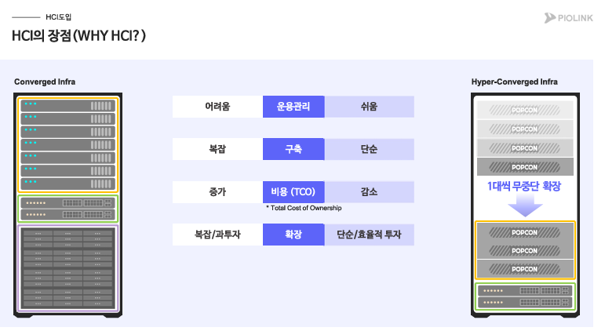

01
통합 관리 효율성과 인프라 단순화
전통적인 Converged Infra 환경에서는 서버, 스토리지, 네트워크 등 여러 구성요소를 각각 설계하고 운영해야 하므로 인프라 구조와 관리가 복잡해질 수 있습니다. HCI는 Compute와 Storage를 소프트웨어 기반으로 통합하고 하나의 플랫폼 관점에서 관리할 수 있도록 하여 운영 구조를 단순화합니다.
- 운용관리 : 여러 개별 시스템을 관리하는 복잡성을 줄이고 통합 관리 체계를 구성할 수 있습니다.
- 구축 : 개별 구성요소를 별도로 설계·통합하는 부담을 줄여 구축 과정을 단순화할 수 있습니다.
- 비용(TCO) : 초기 구축비뿐 아니라 운영과 유지에 필요한 전체 비용을 함께 고려하는 구조로 접근할 수 있습니다.
- 확장 : 기존 환경에 필요한 노드를 추가하는 방식으로 인프라를 단계적으로 확장할 수 있습니다.